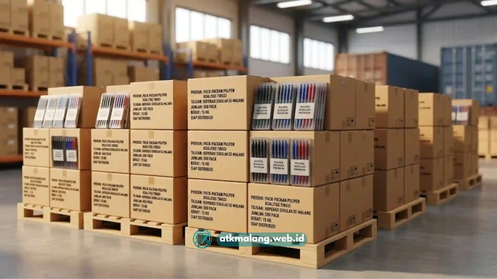

Bagi pengelola koperasi sekolah, urusan pulpen sebenarnya bukan sekadar belanja rutin ini adalah keputusan bisnis kecil yang berdampak langsung ke margin keuntungan koperasi.
Banyak bendahara koperasi mengeluh: pulpen murah cepat hilang dari rak, tintanya macet persis saat murid sedang ujian, sementara harga dari toko konvensional terlalu tinggi untuk dijual lagi dengan untung yang wajar.
Kalau Anda sedang mencari grosir pulpen malang yang benar-benar bisa diandalkan, artikel ini menyusun SOP praktis yang bisa langsung diterapkan sebelum tanda tangan kontrak pengadaan.
Daftar Isi
Rangkuman Kriteria Memilih Grosir Pulpen Terpercaya
Memilih grosir pulpen malang terbaik untuk koperasi sekolah mewajibkan Anda memverifikasi ketersediaan stok bolpoin gel berkualitas tinggi, jaminan harga agen langsung agar koperasi mendapatkan margin profit optimal.
Selain itu, perhatikan juga layanan pengantaran gratis ongkir ke lokasi sekolah, serta ketahanan tinta bolpoin yang diuji anti macet. Sebagai tambahan, sediakan selalu aneka macam Alat Tulis Kantor pendukung lainnya.
Di luar empat poin inti tersebut, ada beberapa lapisan verifikasi tambahan yang sebaiknya tidak dilewatkan sebelum koperasi sekolah menjatuhkan pilihan pada satu supplier pulpen sekolah.
1. Legalitas dan Riwayat Pengiriman ke Sekolah Lain
Grosir yang serius biasanya sudah punya jejak pengiriman ke beberapa sekolah di area yang sama. Tanyakan referensi, dan jika memungkinkan minta contoh nota pembelian dari koperasi sekolah lain yang pernah bertransaksi.
Ini bukan soal formalitas semata, tapi cara paling cepat menilai apakah pemasok benar-benar memahami ritme kebutuhan Alat Tulis Kantor sekolah.
Ritme ini biasanya krusial di awal semester, menjelang ujian tengah semester, dan menjelang ujian akhir.
2. Kejelasan Skema Harga Grosir per Lusin dan per Karton
Toko konvensional sering menjual dengan harga eceran yang dipoles seolah "harga grosir", padahal selisihnya tipis. Grosir pulpen yang kredibel akan transparan soal tingkatan harga kebutuhan Alat Tulis Kantor Anda.
Mulai dari harga per lusin, harga per karton (biasanya berisi 12-20 lusin), dan diskon tambahan untuk pembelian rutin bulanan.
Semakin jelas skema ini disampaikan di awal, semakin mudah koperasi menghitung proyeksi margin sebelum menjual kembali ke siswa.
3. Kualitas Tinta yang Teruji, Bukan Sekadar Klaim
Ini bagian yang paling sering diabaikan, padahal paling krusial. Pulpen dengan tinta yang mudah menggumpal di ujung mata pena akan membuat siswa gagal menulis lancar tepat di momen paling menegangkan ujian.
Tim logistik ATK Malang secara rutin melakukan uji goresan pada kertas HVS 70 gram untuk memastikan alur tinta tetap konsisten dari awal hingga akhir isi tabung.
Pengujian Alat Tulis Kantor ini membuktikan pulpen bukan hanya lancar di lima menit pertama pemakaian, tetapi sampai tinta habis.
Panduan Teknis Memilih Ketebalan Mata Pena yang Tepat
Salah satu detail teknis yang jarang dibahas toko ATK pada umumnya adalah perbedaan ketebalan mata pena 0.5mm dan 0.7mm.
Padahal ini menentukan kenyamanan menulis siswa dalam durasi lama seperti saat ujian sekolah berlangsung.
- Mata pena 0.5mm menghasilkan goresan lebih tipis dan presisi, cocok untuk siswa SMP–SMA yang tulisannya sudah rapat dan membutuhkan efisiensi ruang di lembar jawaban.
- Mata pena 0.7mm menghasilkan goresan lebih tebal dan tegas, umumnya lebih disukai siswa SD karena tekanan tangan yang belum stabil sehingga garis tetap terlihat jelas meski tekanan menulis ringan.
Selain ketebalan, penyimpanan stok Alat Tulis Kantor juga memengaruhi umur pakai pulpen.

Kualitas bolpoin gel yang baik menjamin kenyamanan siswa saat ujian sekolah.Tim ATK Malang menyimpan stok bolpoin dalam kondisi tertutup rapat dan terhindar dari suhu panas Gudang.
Karena paparan panas berlebih adalah penyebab utama tinta gel mengering sebelum sempat digunakan.
Ini adalah masalah yang sering terjadi jika koperasi sekolah menimbun stok terlalu lama tanpa rotasi yang baik.
Tabel Perbandingan Tiga Tipe Pulpen Terlaris untuk Koperasi Sekolah
Agar lebih mudah dibandingkan, berikut matriks spesifikasi tiga tipe pulpen yang paling sering dipesan koperasi sekolah dari grosir atk malang terdekat:
| Tipe Pulpen | Ketebalan Garis | Ketahanan Tinta (estimasi) | Harga Grosir per Lusin | Rekomendasi Target Siswa |
|---|---|---|---|---|
| Pulpen Gel Sekolah 0.5mm | Tipis, presisi | ± 400–450 meter tulisan | Rp18.000 – Rp22.000 | SMP–SMA, kebutuhan ujian dan catatan rapi |
| Ballpoint Biasa 0.7mm | Tebal, tegas | ± 600–650 meter tulisan | Rp12.000 – Rp15.000 | SD, kebutuhan harian dan latihan menulis |
| Pulpen Semi-Gel | Sedang, halus | ± 500 meter tulisan | Rp15.000 – Rp18.000 | SMP, kombinasi kenyamanan dan daya tahan |
Angka ketahanan tinta di atas merupakan estimasi rata-rata berdasarkan pengujian internal dan bisa bervariasi tergantung merek serta intensitas pemakaian.
Untuk kebutuhan paket Alat Tulis Kantor dalam jumlah besar, koperasi biasanya mengombinasikan ballpoint biasa untuk siswa SD.
Sementara pulpen gel untuk jenjang yang lebih tinggi, agar margin tetap terjaga tanpa mengorbankan kualitas produk.
Mengapa Koperasi Sekolah di Malang Raya Perlu Supplier Tetap
Berganti-ganti pemasok setiap semester justru merugikan koperasi dalam jangka panjang. Selain harga yang tidak stabil, koperasi juga kehilangan posisi tawar.
Posisi tawar ini sangat penting untuk mendapatkan diskon loyalitas pembelian produk Alat Tulis Kantor.
Dengan menjalin kerja sama tetap bersama satu supplier pulpen sekolah yang memahami kebutuhan area Malang Raya baik Kota Malang, Kabupaten Malang, maupun Kota Batu.
Koperasi bisa mendapatkan kepastian stok, harga yang konsisten dari periode ke periode.
Serta layanan pengantaran yang tidak membebani anggaran operasional karena sudah termasuk gratis ongkir dari ATK Malang.
Bila koperasi sekolah Anda ingin menjajaki kerja sama pengadaan, silakan telusuri katalog lengkap kami.
Langkah Praktis Sebelum Deal dengan Grosir Pulpen
Sebelum menandatangani kesepakatan pengadaan Alat Tulis Kantor, ada baiknya koperasi sekolah melakukan hal berikut:
- Minta sampel pulpen dan uji tulis langsung di kertas HVS yang biasa dipakai untuk ujian.
- Bandingkan harga grosir per lusin dari minimal dua supplier untuk memastikan posisi tawar yang wajar.
- Konfirmasi kebijakan retur jika ditemukan pulpen cacat produksi atau tinta macet dalam kondisi baru.
- Pastikan estimasi waktu pengantaran sesuai dengan jadwal tahun ajaran, terutama menjelang masa ujian.
Dengan SOP di atas, koperasi sekolah tidak lagi hanya mengandalkan harga termurah sebagai patokan semata.
Melainkan mempertimbangkan kualitas tinta, ketebalan mata pena yang sesuai jenjang siswa, dan kestabilan pasokan jangka panjang.
Pastikan Anda selalu bermitra dengan penyedia Alat Tulis Kantor terpercaya seperti ATK Malang.